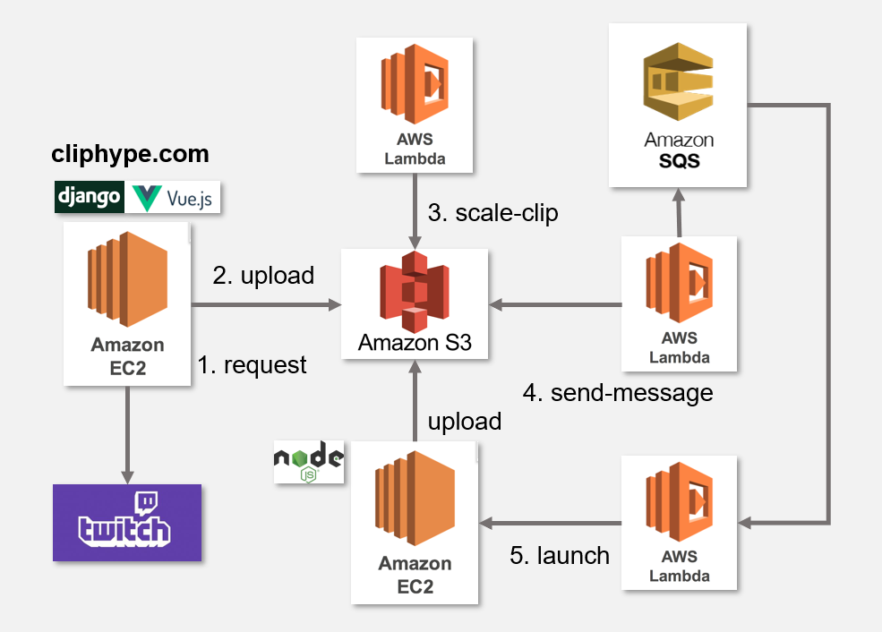

ClipHype
ClipHype とは
Twitch.tvの配信中に作られるクリップを利用したWebサービスです。特徴は、ユーザがフォローしている配信者のクリップの閲覧が容易であることや、配信者のクリップをまとめて１つのハイライト動画として作成できることです。近年、配信の切り抜き動画が主にYoutubeで流行っており、その動画の作成をクリップを選択するだけでできるという利点があります。
ClipHypeの機能
- Twitch APIを利用したクリップの閲覧、ダウンロード
- クリップを用いたクリップ集（ハイライト動画）の作成
システムの構成
１つ目の機能は、ひたすらTwitch APIを叩いて表示させているだけなので、ここでは、２つ目のハイライト動画の作成におけるシステムの構成について触れます。構成図は下のようになります。バックエンドは主にAWSを利用しました。

バックエンド
WebアプリフレームワークとしてDjangoを使用しています。
Webサイト自体は、AWSのEC2のオンデマンドインスタンスを利用しており、Nginxを用いてデプロイしています。ここでのタスクは、複数の動画を１つの動画に変換し保存するというものです。変換の作業は負荷が大きく、数時間かかるものもあるため、別のインスタンスにて処理を行います。低価格で抑えるために、LambdaからSpot Instanceを立ち上げるようにしました。
図の手順をまとめると以下のようになります。
- ユーザによって作成する動画がリクエストされる
- 作成する動画に使われるクリップをS3にアップロードする
- S3にアップロードされた動画を既定のサイズにリサイズする
- 全ての動画がリサイズされたらSQSにメッセージを送る
- SQSからLambdaが呼び出され、スポットインスタンスを立ち上げる
- 動画の変換処理を行い、S3にアップロード
スポットインスタンスでNode.jsを使っているのは、動画をかっこ良く繋げるOSSがNode.jsで使えるからで、そのままNode.jsで簡単にサーバを立ち上げています。
フロントエンド
こちらは、フレームワークとしてVue.jsとBootstrapを使用しています。
クリップはフロントエンドでAPIを叩くことで取得しています。取得したクリップは、サムネイル付きでページネーションを利用して表示されるようになっています。また、選択したクリップの順序の変更、削除などの編集機能もサポートしています。
おわりに
バックエンドは、AWSの機能使ってトリガーでLambda呼び出したり、Lambdaからスポットインスタンス起動させたりするのがシステムを構築してる感あって楽しかったし、意外と低価格で抑えられたのが満足感高かった。
フロントエンドはVue.jsが使いやすくて良かった。よりモダンなサイトも作ってみたいので、Nuxt.jsやReactも勉強してみたい。
他にも、付け加えたい機能がたくさんあるし、安定してきたら他の人に使ってもらいたい！と思ってます。